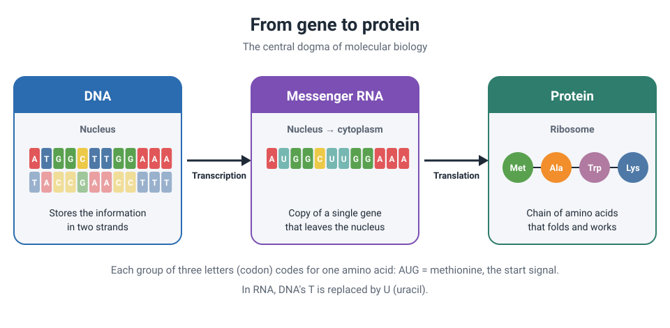

The "central dogma"
In 1958 Francis Crick summed up the flow of information in the cell with an idea he called, half-jokingly, the central dogma:
DNA → RNA → protein
DNA is the archive that never leaves the nucleus. To use a recipe, the cell makes a working copy in RNA and takes it to the "kitchen", where the protein is made.

Step 1: transcription
An enzyme called RNA polymerase sits at the start of a gene and copies one of its strands into a molecule of messenger RNA (mRNA). The cell then cuts out the introns and joins the exons (splicing). By combining exons in different ways, a single gene can give rise to several proteins.
Step 2: translation
The mRNA leaves the nucleus and reaches the ribosomes, the machines that make proteins. There it is read in groups of three letters called codons. Each codon corresponds to an amino acid, the basic building block of proteins, or to a stop signal.
- There are 64 possible codons (4 × 4 × 4) and only 20 amino acids, so several codons mean the same thing. That is why the code is called "redundant" (or degenerate).
- AUG marks the start and codes for the amino acid methionine.
- UAA, UAG and UGA mark the end.
Adapter molecules, transfer RNAs, bring the right amino acid to each codon. The ribosome links them together and the chain folds into its three-dimensional shape, which determines its function.
An almost universal code
The genetic code is practically the same in bacteria, plants and people. That is why a bacterium can make human insulin if the corresponding gene is introduced, something done industrially since 1982. There are small exceptions, for example in mitochondria.
Marshall Nirenberg and Heinrich Matthaei deciphered the first codon (UUU = phenylalanine) in 1961, and the complete code was known by about 1966.
Switching genes on and off
All the cells of the body have almost the same DNA, yet a neuron looks nothing like a red blood cell. The difference lies in which genes are used. Regulatory proteins, chemical marks on DNA (see Epigenetics) and the way chromatin is packaged decide which recipes are read in each cell at each moment.
Why it matters in medicine
If a change in DNA alters a codon, it can change an amino acid, create a premature stop signal or scramble the reading frame. That explains many genetic diseases, as you will see in Mutations and variants. It also explains how some new treatments work, such as mRNA vaccines or drugs that modify splicing.
Sources
- Crick FHC. On protein synthesis. Symp Soc Exp Biol. 1958;12:138-163.
- Nirenberg MW, Matthaei JH. The dependence of cell-free protein synthesis in E. coli upon naturally occurring or synthetic polyribonucleotides. PNAS. 1961;47:1588-1602.
- MedlinePlus Genetics. How do genes direct the production of proteins?
- Alberts B, et al. Molecular Biology of the Cell (7th ed.). W. W. Norton, 2022.